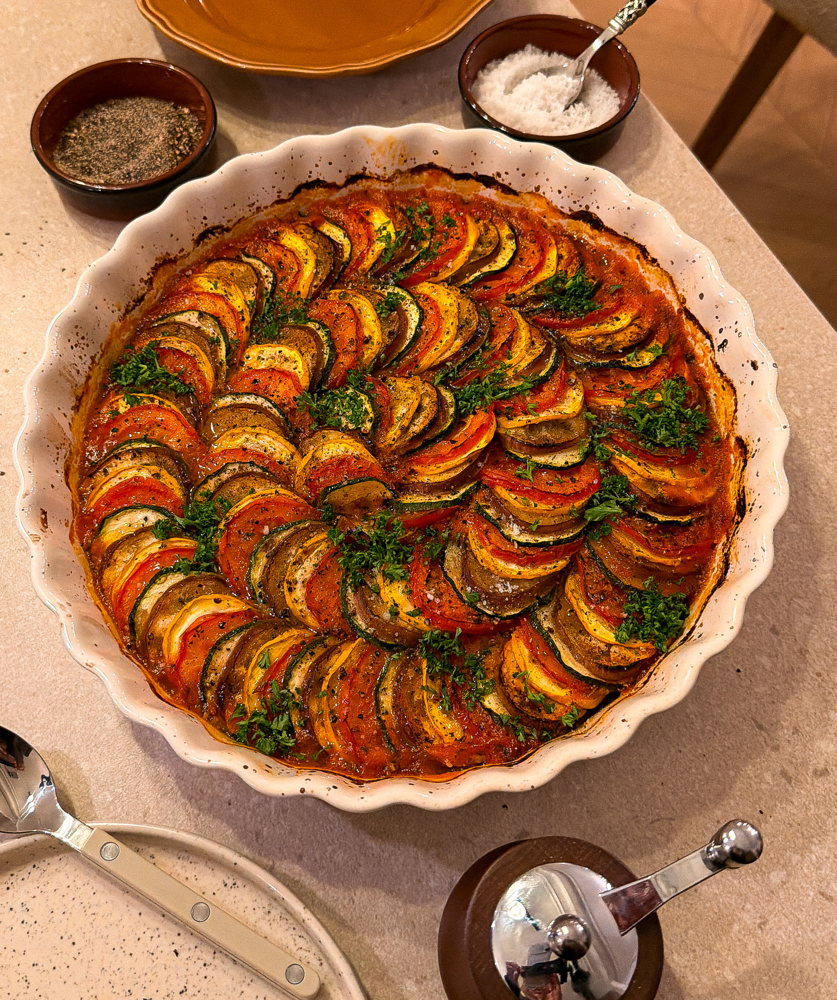

MAIN COURSE | SIDE DISH
RATATOUILLE
PREP TIME: 30 MINUTES
TOTAL TIME: 1 HOUR 25 MINUTES
COOK TIME: 45 TO 55 MINUTES
YIELDS: 5 TO 6
Ratatouille has been my favorite movie for as long as I can remember, and I’ve always dreamed of making that iconic vegetable dish. I finally made it while I was in Paris, and it instantly stuck with me. It makes vegetables craveable and so beautiful, in the coziest, most comforting way.
JUMP TO RECIPE